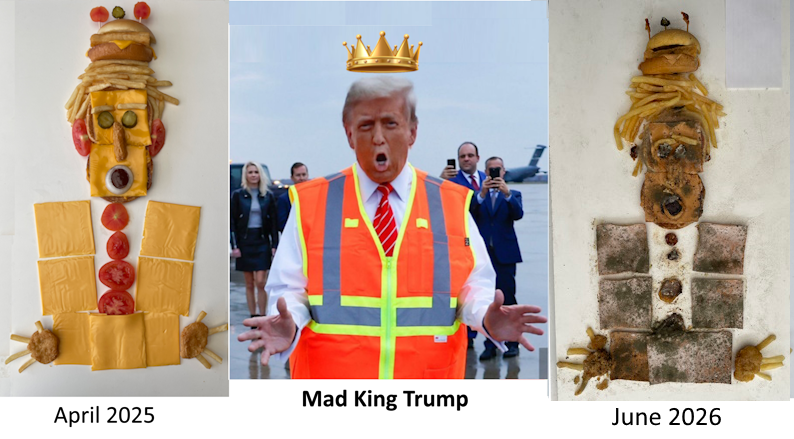
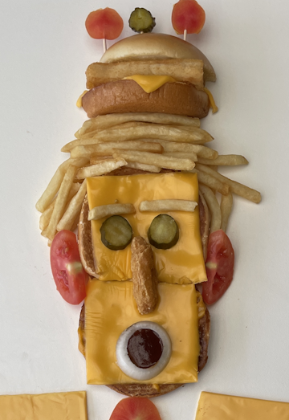
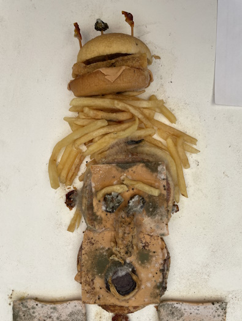

In my dismay at the return of Mad King Trump, and inspired by Giuseppe Arcimboldo's 1591 portrait of Holy Roman Emperor Maximilian II portrayed in fruits, vegetables, and flowers, I created a portrait of Trump using his favorite food - McDonald's [1].
Over the following months, I documented how this dazzling, artificially-colored paean to brute Americanism decayed to a pale white and gray ghost of rotting hubris and megalomania.

The conclusion I draw from this artwork is that all of history's greatest monsters are dead and gone, and today's monsters like Trump will follow them into oblivion.
This rotting artwork shows us that the enemies of America and Planet Earth may project an unstoppable, implacable, unassailable facade, but are actually fragile, ephemeral creatures who will wither away to become the compost that fertilizes a better future for all living things.
Even McDonald's food will crumble to impotent dust.
HOW IT STARTED
April 2025

HOW IT'S GOING
June 2026

[1] McDonald's Filet-o-Fish®, French Fries, Quarter Pounder with Cheese®, Chicken McNuggets®, and Spicy BBQ Sauce® were obtained from the Seattle's Ballard McDonalds on April 4, 2025.
The organic tomatoes, pickles, and onion, and the American cheese were obtained from the researcher's refrigerator.